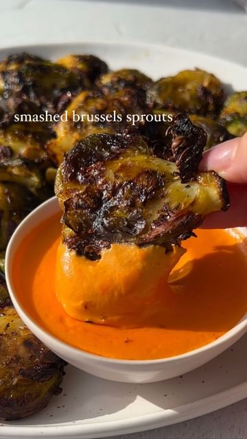

🤯💕🥬SMASHED BRUSSELS by @PLANTYOU. RECIPE for the sprouts and the dip (as always) at PLANTYOU DOT COM now! Tag a friend who needs this recipe for the holidays, and follow me for plant-based deliciousness. LOVE YOU GUYS!
recipe by @plantyou (Carleigh Bodrug) - see original post

.
#brusselssprouts #holidayrecipes #veganholiday #veganrecipe #vegandiet #veganfood #smashedbrusselssprouts #healthyrecipe #healthydiet #eatmoreplants #veganeating #easyrecipe #simplerecipe